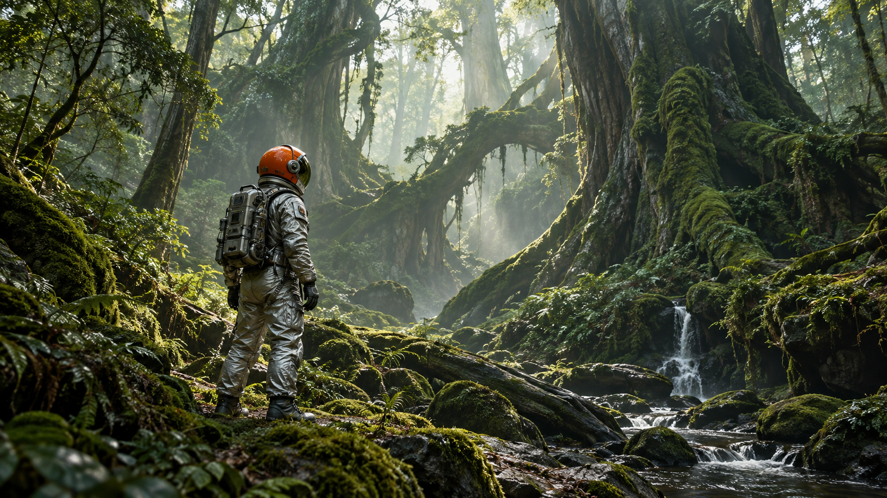

A PLAYGROUND FOR YOUR NEXT FILM想象之外，自由之内。
YOUR WAY.
把灵感摊开。
让故事发生。
从一张图，到一个镜头，再到你的故事。
在自由画布上，让每一个想法都有位置。
自由探索 · 随时撤销
本次体验使用演示素材
[ IDEA → FRAME ]
+
+
FRAME STUDY / 00116:9

森林来信FOREST LETTERSEXT. FOREST — DAY想法的第一个画面。 ↗
DRAG IDEAS. MAKE STORIES.
MORE ROOM FOR IDEAS✳LESS FRICTION TO CREATE✳MORE ROOM FOR IDEAS✳LESS FRICTION TO CREATE✳
THE WAY YOU THINK.
思路自由，
画布也是。
把参考、尝试和意外惊喜放在一起。
随手摆，放心试，慢慢找到故事的样子。
森林来信 /灵感画布 给想法留点空间
MOOD & MOMENTS森林来信 / 视觉探索
不急着定稿。
先看看还有什么可能。↘
参考图镜头草稿一闪而过的灵感67%
01 / EXPLORE先有一个画面。
写下一点想象，或放进一张参考。
从任何地方开始，都算开始。
02 / PLAY给它一点变化。
试构图，换氛围，让画面动起来。
好的版本留下，其他的也不必丢。
03 / MAKE把镜头连成故事。
挑选、排序、调整节奏。
让散落的灵感，有一个完整的表达。
A FEW PLACES TO START.
先从一个
“万一呢？”
三份示例灵感，等你接着往下想。
点开一个，试试你的第一个镜头。
YOUR NEXT FRAME IS WAITING.没有标准答案，只有你的版本。
LET IT
HAPPEN.
把没说完的故事，交给画面。SEE YOU ON THE CANVAS. ↗